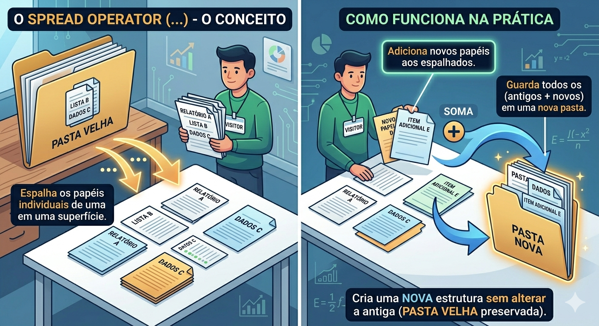

Aula 17
Funções e Arrow Functions, Organização Funcional e Utilitários de Dados
Descrição: Abordagem imersiva sobre o poder das funções no JavaScript moderno. A aula explora as diferenças entre funções tradicionais e Arrow Functions, além de fundamentar a manipulação declarativa de coleções de dados com map, filter, reduce, spread e destructuring. O foco final é o desenvolvimento de funções puras e a organização de código para criar lógicas previsíveis, seguras e modulares, aplicando o escopo correto de variáveis.
Tópicos desta aula
Arrow Functions
map, filter, reduce
Spread e Destructuring
Funções Puras
Utilitários de Dados
Aula 17
JavaScript Moderno
ES6+
Abertura
Cenário Real:
No desenvolvimento industrial de software, lidamos constantemente com fluxos intensos de dados: dezenas de milhares de usuários ativos, registros de sensores industriais e transações financeiras em tempo real.
Imagine que somos desenvolvedores na "Conecta Varejo", uma startup de e-commerce em rápido crescimento.
O backend nos envia uma lista de produtos em um formato bruto e nós precisamos, no frontend, exibir um resumo das promoções ativas, formatando preços e aplicando descontos.
Abertura
Cenário Real (Continuação):
Na abordagem tradicional (imperativa), criaríamos laços for gigantescos, criando variáveis temporárias e um código frágil.
Hoje, vamos aprender a programar de forma declarativa e funcional: declarando o que queremos que aconteça, em vez de ditar como o computador deve executar cada passo minucioso.
Abertura
Pergunta:
Reflexão
Você já desenvolveu um laço de repetição que modificou os dados de uma lista original por engano, gerando um "bug" difícil de rastrear em outra parte do sistema? Como podemos transformar esses dados de maneira segura e previsível sem corromper nossa fonte da verdade?
A Evolução
A. Conceito:
Uma função é um bloco de código JavaScript definido uma única vez, mas que pode ser executado repetidamente.
Em JS, as funções são tratadas como objetos (valores de primeira classe) que podem ser atribuídos a variáveis ou passados como argumentos.
O grande desafio das funções tradicionais reside no contexto da palavra-chave this, que faz referência ao contexto da chamada da função.
A Evolução
A. Conceito: (Continuação)
Para simplificar esse comportamento em casos de passagem de funções (como métodos de iteração) e prover uma conveniência sintática, as arrow functions foram introduzidas.
Elas são precursoras das "funções abreviadas", resolvendo o problema do this, adotando um escopo léxico (herdam o this do bloco onde foram escritas).
A Evolução
B. Visualizando:
Analogia
Imagine um crachá de visitante da empresa.
Na função tradicional, seu "crachá" (o this) ganha as permissões do departamento onde você está no momento em que é chamado.
Na Arrow Function, seu crachá (o this) tem as permissões fixas do departamento de origem (escopo léxico) de onde você foi criado, independentemente de onde a função seja executada depois.
A Evolução
B. Visualizando:
A Evolução
C. Exemplo de Código:
JavaScript
// 1. Função Tradicional
function aplicarDescontoTradicional(preco, desconto) {
return preco - (preco * desconto);
}
// 2. Arrow Function (Sintaxe curta e direta)
const aplicarDescontoArrow = (preco, desconto) => preco - (preco * desconto);
console.log(aplicarDescontoTradicional(100, 0.2)); // 80
console.log(aplicarDescontoArrow(100, 0.2)); // 80
A Evolução
D. Explicação linha por linha:
- function aplicarDescontoTradicional(preco, desconto): Declara a função no modelo convencional com seus parâmetros. O return é explícito.
- const aplicarDescontoArrow: Atribuímos nossa função a uma constante (evitando que seja sobrescrita).
- = (preco, desconto) =>: Substitui a palavra function. O => (arrow) indica o corpo da função.
- preco - (preco * desconto): Por ter apenas uma linha de instrução, o return fica implícito. O código fica enxuto e conciso.
A Evolução
E. Exercícios:
- Converta a função function somar(a, b) { return a + b; } para uma Arrow Function.
- Crie uma Arrow Function que receba um nome e retorne "Olá, " + nome.
- Crie uma Arrow Function sem parâmetros que retorne a data atual (new Date()).
- Explique em uma frase por que usar const ao declarar uma Arrow Function.
- Identifique o erro: const quadrado = x => { x * x }. (Dica: falta o return dentro das chaves).
Higher-Order Functions
A. Conceito:
Estes são os pilares da manipulação moderna de dados.
Eles recebem outras funções como argumentos para processar coleções (arrays) de forma declarativa e pura, evitando estruturas imperativas manuais.
O map transforma todos os elementos do array, gerando um novo do mesmo tamanho;
Higher-Order Functions
A. Conceito: (Continuação)
o filter cria um novo array filtrando os dados a partir de uma condição (true ou false);
já o reduce condensa os dados de todo o array a um único valor (como uma soma total de carrinho de compras).
O grande poder está em encadear esses métodos para criar verdadeiros "pipelines" de transformação de dados.
Higher-Order Functions
B. Visualizando:
A Fazenda de Laranjas
Pense em uma fazenda de laranjas.
- filter: A máquina que separa apenas as laranjas grandes das pequenas.
- map: A máquina que espreme cada laranja grande e gera um copo de suco para cada uma.
- reduce: O tanque que soma/coleta todo o suco de todos os copos em um único reservatório gigante.
Higher-Order Functions
B. Visualizando:
Higher-Order Functions
C. Exemplo de Código:
JavaScript
const produtos = [
{ id: 1, nome: 'Monitor Gamer', preco: 1800, emPromocao: true, desconto: 0.10 },
{ id: 2, nome: 'Teclado RGB', preco: 300, emPromocao: false, desconto: 0 },
{ id: 3, nome: 'Mouse', preco: 150, emPromocao: true, desconto: 0.20 }
];
// Pipeline declarativo encadeado
const totalDescontos = produtos
.filter(produto => produto.emPromocao === true)
.map(produto => produto.preco * (1 - produto.desconto))
.reduce((acumulador, precoFinal) => acumulador + precoFinal, 0);
console.log(totalDescontos); // (1800 * 0.90) + (150 * 0.80) = 1620 + 120 = 1740
Higher-Order Functions
D. Explicação linha por linha:
- const produtos = [...]: Criamos o array de objetos que simula nossa resposta do backend.
- .filter(...): Analisamos cada objeto. Se emPromocao for true, ele é aprovado e passa para a próxima etapa. O teclado é ignorado.
- .map(...): Recebemos a nova lista (apenas com Monitor e Mouse). Retornamos apenas o cálculo matemático do preço com o desconto. O formato passa de objeto para número.
- .reduce(...): Recebe os valores já mapeados. O acumulador inicia em 0. A cada laço, soma o valor anterior ao precoFinal do item atual.
Higher-Order Functions
E. Exercícios:
- Use map para criar um array com o dobro dos valores de [1, 2, 3, 4].
- Use filter para encontrar apenas os números pares no array [10, 15, 20, 25].
- Use reduce para encontrar o produto (multiplicação total) de [2, 3, 4].
- Encadeie um filter e um map para achar o comprimento de nomes de pessoas maiores de idade.
- Qual é o papel do número 0 no final da função reduce do nosso exemplo principal?
Spread e Destructuring
A. Conceito:
A desestruturação permite que extraiamos dados complexos de objetos ou arrays e os atribuamos a variáveis distintas de forma rápida e legível.
Já o Spread Operator (...) é essencial para expandir o conteúdo de objetos/arrays.
Na programação funcional, a regra de ouro é a "imutabilidade", ou seja, nunca alterar a fonte original.
Spread e Destructuring
A. Conceito: (Continuação)
Utilizamos o operador de espalhamento (Spread) para clonar nossos arrays e objetos e, a partir dos clones, inserir ou atualizar novas informações sem causar efeitos colaterais ao restante do software.
Spread e Destructuring
B. Visualizando:
Desestruturação
É como abrir uma mala de viagem etiquetada (objeto) e tirar diretamente a camisa e a calca, sem precisar vasculhar a mala todas as vezes (mala.camisa, mala.calca).
Spread e Destructuring
B. Visualizando:
Spread e Destructuring
B. Visualizando:
O Spread (...)
é equivalente a pegar todos os papéis de uma pasta e "espalhá-los" em cima de uma nova mesa, permitindo que você adicione papéis novos antes de guardar tudo em uma pasta nova, preservando a velha.
Spread e Destructuring
B. Visualizando:
O Spread (...)

Spread e Destructuring
C. Exemplo de Código:
JavaScript
const usuarioDB = { id: 101, nome: 'Ana', cargo: 'Dev Frontend', ativo: true };
// Desestruturação (Destructuring)
const { nome, cargo } = usuarioDB;
console.log(`Colaboradora: ${nome}, Vaga: ${cargo}`);
// Spread Operator (Imutabilidade)
const usuarioAtualizado = {
...usuarioDB, // Espalha todas as chaves anteriores aqui
cargo: 'Dev Fullstack', // Sobrescreve o cargo
ultimaAtualizacao: '2026-04-08' // Adiciona novo campo
};
console.log(usuarioDB.cargo); // Dev Frontend (O original NÃO foi tocado!)
Spread e Destructuring
D. Explicação linha por linha:
- const { nome, cargo } = usuarioDB;: O JavaScript entra no objeto usuarioDB, localiza as chaves com os mesmos nomes e as transforma em variáveis utilizáveis.
- const usuarioAtualizado = { ...usuarioDB, ... }: Criamos um NOVO endereço na memória. O ...usuarioDB clona todos os atributos do objeto original para este novo.
- cargo: 'Dev Fullstack': Como foi colocado após o spread, ele substitui a propriedade cargo originada do clone. O objeto velho não sofre interferência.
Spread e Destructuring
E. Exercícios:
- Desestruture os primeiros dois itens do array const notas = [8, 9, 10].
- Extraia o id e atribua a ele o alias codigo usando desestruturação de objeto.
- Clone o array const a = [1,2] e adicione o 3 usando o Spread Operator.
- Junte obj1 = {a: 1} e obj2 = {b: 2} em um único objeto usando o Spread.
- Por que usar usuarioAtualizado.cargo = 'Fullstack' sem clonar antes seria uma violação das boas práticas funcionais?
Funções Puras e Escopo
A. Conceito:
O escopo define onde uma variável "existe" dentro do código (léxico, bloco, função).
A transição do var para let e const evitou diversos bugs globais na linguagem, garantindo que variáveis existam apenas dentro do bloco em que foram declaradas.
A Programação Funcional adota a "Função Pura": aquela que, ao receber o mesmo input, retorna sempre o mesmo output sem modificar variáveis externas (efeitos colaterais nulos).
Funções Puras e Escopo
A. Conceito: (Continuação)
Isso significa que sua função jamais deve buscar variáveis no escopo global e nunca deve alterar a coleção original passada para ela;
ela processa e devolve um artefato inteiramente novo.
Funções Puras e Escopo
B. Visualizando:
A Balança Digital
Uma Função Pura é como uma balança digital.
Toda vez que você colocar o peso de 1kg lá, ela mostrará 1kg.
Ela não depende do clima lá fora, não consulta a cor da parede e, mais importante, o ato de pesar não transforma magicamente seu peso de 1kg em 2kg.
O resultado é perfeitamente isolado e previsível.
Funções Puras e Escopo
B. Visualizando:
Funções Puras e Escopo
C. Exemplo de Código:
JavaScript
// Ruim: Função Impura (Modifica variáveis externas, sofre efeito colateral)
let impostoGeral = 0.1;
const calcularPrecoImpuro = (precoBase) => {
return precoBase + (precoBase * impostoGeral);
};
// Bom: Função Pura (Entradas geram saídas, sem olhar para fora)
const calcularPrecoPuro = (precoBase, impostoParametro) => {
return precoBase + (precoBase * impostoParametro);
};
console.log(calcularPrecoPuro(100, 0.1)); // Sempre 110, infinitamente testável.
Funções Puras e Escopo
D. Explicação linha por linha:
- let impostoGeral: Uma variável externa, suscetível a mudanças acidentais em outras partes do código.
- calcularPrecoImpuro: Como depende de impostoGeral, o resultado dessa função pode ser diferente a cada execução. Dificílima de debugar.
- calcularPrecoPuro: Não depende do meio exterior. Os parâmetros isolam o processamento. Ele será injetado limpo e retornará um dado novo limpo.
Funções Puras e Escopo
E. Exercícios:
- A função const gerarId = () => Math.random() é pura ou impura? Por quê?
- Explique a diferença de usar let dentro de um if contra usar var.
- Transforme uma função que usa um const taxa = 5 global numa função pura com parâmetros.
- Por que funções puras são mais fáceis de aplicar em testes unitários automatizados?
- Qual a relação de métodos como o map e funções puras?
FAQ
Dúvidas Reais
Eu posso usar arrow functions para tudo no desenvolvimento de sistemas?
Resposta: Nem sempre! Como Arrow Functions não possuem seu próprio contexto do this, elas não são adequadas para serem usadas como métodos de classes/objetos onde o contexto é importante para acessar propriedades internas desse objeto.
FAQ
Dúvidas Reais
Qual a diferença entre usar o map ou um forEach?
Resposta: O forEach realiza uma iteração para causar um efeito colateral (ex: logar algo na tela) e retorna undefined. O map, alinhado à programação funcional, extrai um array totalmente novo como resultado da iteração.
FAQ
Dúvidas Reais
O reduce é só para somar números?
Resposta: Não! Ele pode "reduzir" um array para qualquer único tipo de valor. Você pode reduzir uma lista de transações em um único objeto de relatório organizado por categorias.
FAQ
Dúvidas Reais
Usar muito o operador de spread (...) prejudica a performance do sistema?
Resposta: Para coleções de tamanho razoável no dia a dia da indústria web, o impacto é nulo. Porém, em fluxos de milhares de registros por segundo, cópias profundas aninhadas de objetos imensos podem requerer estratégias específicas de memória em vez de apenas spreads infinitos.
FAQ
Dúvidas Reais
No mercado de trabalho, eles checam se meu código é "puro" e "declarativo"?
Resposta: Sim! Em processos seletivos para times robustos, criar soluções com map/filter/reduce demonstra maturidade, preocupação em evitar "side effects" e aderência à cultura de Testes Automatizados e Código Limpo (Clean Code).
Exercícios de Fixação
Instruções Iniciais
Atenção à IA Ética
Para estas atividades práticas, utilize ferramentas como o Gemini APENAS para gerar uma base de dados JSON (ex: Gere 20 produtos fictícios com nome, preco e ativo). A codificação lógica deve ser feita por você e seu colega!
Exercícios de Fixação
Filter e Map
- 1. Limpador de Estoque
Descrição: Dado um array de objetos de produtos { nome, quantidade }, crie uma rotina usando o método filter para retornar um array apenas com os itens que possuem a quantidade maior do que zero.
Entrega: Script contendo o Array inicial, a implementação da função com filter e um console.log demonstrando os itens filtrados em tela.
- 2. Inflação Aplicada
Descrição: Receba um array de números representando preços. Crie uma Arrow Function usando map que devolva o array com todos os valores ajustados em +5%.
Entrega: Script da função criada, executada sobre o array original e console.log com os preços inflacionados.
Exercícios de Fixação
Destructuring e Reduce
- 3. Desempacotador de Usuários
Descrição: Você recebeu da API a estrutura const cliente = { perfil: { nome: 'Luiz', idade: 25 }, contato: { email: 'l@email.com', fone: '999' } }. Use desestruturação profunda (destructuring) para extrair nome e email para o console sem mencionar perfil e contato.
Entrega: Script do código contendo objeto e a const de desestruturação limpa e otimizada.
- 4. Faturamento do Dia
Descrição: Você tem a base [{venda: 1, valor: 45.5}, {venda: 2, valor: 120.0}]. Empregue o reduce para obter o faturamento total da loja no dia.
Entrega: Função com método reduce funcionando e o retorno isolado do valor total.
Exercícios de Fixação
Spread e Encadeamento
- 5. O Clone Seguro
Descrição: O backend enviou o usuario = { id: 1, plano: 'Basic' }. O cliente clicou em "Fazer Upgrade". Use o Spread Operator para gerar o usuarioPremium com plano 'Pro' e incluindo um novo campo upgradeDate: new Date(), mantendo o id intacto e o objeto de base imutável.
Entrega: Script do código com o uso de ... provando via log que usuario e usuarioPremium são independentes.
- 6. Relatório de E-commerce Múltiplo
Descrição: Combinando filter, map e reduce. Dado um array de vendas (com status "APROVADO" ou "CANCELADO" e um sub-array de produtos), isole apenas as vendas "APROVADAS", calcule o subtotal de cada uma e, ao final, calcule o Faturamento Total final dessa massa de dados.
Entrega: Script com o encadeamento dos três High-Order functions que solte apenas uma linha com o valor faturado da empresa.
Exercícios de Fixação
Agrupamento e Refatoração
- 7. Sanitizar e Agrupar Dados
Descrição: Receba um array sujo de nomes misturados com nulls e strings vazias. Filtre os invádos. Depois, use reduce pra contar as ocorrências de cada nome e retorne um objeto. Ex:{ 'Ana': 2, 'João': 1 }.
Entrega: Código funcional comprovando a eliminação do lixo e a tabulação/agrupamento correto num objeto novo.
- 8. Refatoração Imperativa para Declarativa
Descrição: Escreva um laço for gigantesco com contadores que pegue uma lista de alunos e retorne nomes em maíusculo apenas de quem tirou nota > 7. Em seguida, refatore totalmente o código deletando o for e implementando filter e map.
Entrega: Os dois blocos de código (o ruim e o bom) evidenciando as diferenças.
Exercícios de Fixação
Funções Puras e Utils
- 9. Função Pura de Carrinho de Compras
Descrição: Desenvolva a função adicionarAoCarrinho(carrinhoAtual, itemNovo). É expressamente proibido usar o .push(), pois ele é mutável e fere a função pura. Descubra como usar o spread para anexar o item de forma segura.
Entrega: O código da função mostrando a ausência de modificação em carrinhoAtual.
- 10. Utilitários de Dados Genéricos (Atividade em Dupla)
Descrição: Criem juntos um arquivo utils.js. Nele devem estar exportadas 4 Arrow Functions puras genéricas: 1) obterApenasAtivos(arr), 2) formatarPrecos(arr), 3) somarCampo(arr, campo), 4) clonarComData(obj).
Entrega: Script com a padronização e importação desses utilitários num arquivo central testando suas utilidades em bases de dados randômicas.
Conclusão
Como você usará hoje na Situação de Aprendizagem:
No final da SA, o Projeto Principal exige o desenvolvimento da interação do front-end e integrações com o Banco de Dados.
Durante as "Sprints" e as rotinas diárias da aplicação web, quando você buscar os registros do banco em JSON, será mandatório usar o que aprendemos hoje (map, filter e funções puras) para renderizar esses dados na tela sem "quebrar" ou sobrecarregar a integridade da aplicação, respeitando as exigências de usabilidade, robustez e boas práticas arquiteturais.
Conclusão
Conexão com a Próxima Aula:
Hoje dominamos a manipulação declarativa de coleções através da interatividade do Client-Side e das Higher-Order Functions.
Na nossa próxima aula 18 exploraremos a manipulação dinâmica do DOM através de seletores fundamentais e métodos de alteração de estado, como classList e innerHTML, para transformar o HTML estático em uma interface viva.
A exposição foca na aplicação prática de eventos, demonstrando como as ações do usuário podem atualizar a UI e modificar estilos de forma instantânea.
Como resultado final, desenvolveremos uma funcionalidade de Tema Claro/Escuro, utilizando a lógica de toggle para alternar classes CSS e personalizar a experiência visual.